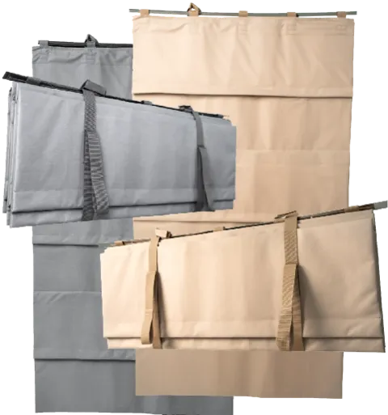
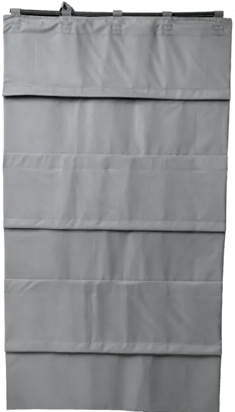
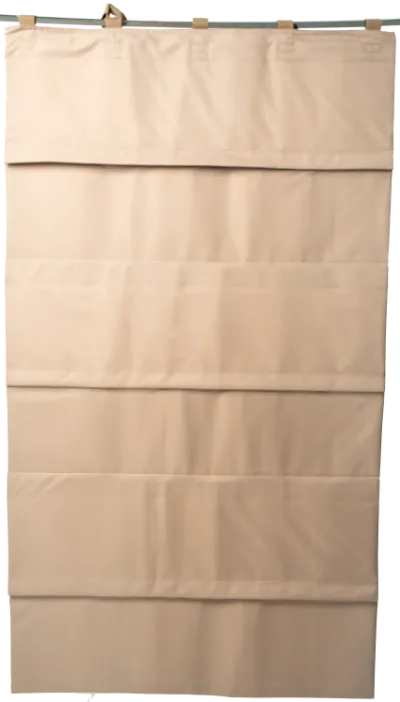
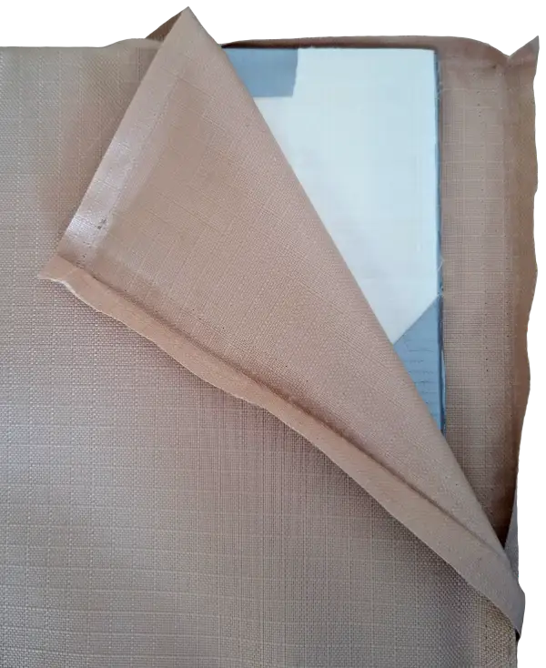
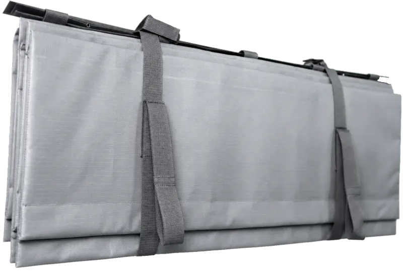
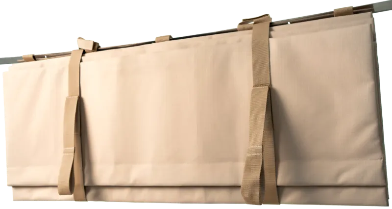
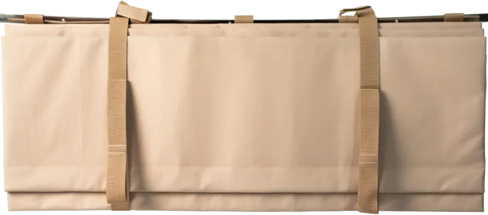

Противоосколочная штора
Защита. Спокойствие. Уверенность. Дома и на работе.

- Внутри
- Многослойная мягкая броня из СВМПЭ — сверхвысокомолекулярного полиэтилена плотностью 160 г/м². Её применяют в современных бронежилетах.
- Снаружи
- Ткань Оксфорд 600 рип-стоп.
- Пошив
- Точный лазерный крой, прочные нити, крепкие стропы.
- Конструкция
- Запатентована. Быстро раскрывается, в сложенном виде почти незаметна в интерьере.
Варианты и характеристики


Штора висит над окном в сложенном виде. Когда нужно, она раскрывается под собственным весом и закрывает весь оконный проём. Складывается так же легко.
Крепится изнутри к стене над проёмом или на гардину.
Подобрать размер и пакет01 / Размер
Размер по оконному проёму
Штора должна полностью закрывать оконный проём, а не только раму окна. Ширины две, длина набирается панелями.
- 1,60 м
- для оконного проёма, закрывает большинство распространённых окон
- 1,00 м
- для балконной двери
- 5–8
- панелей в длину: обычно 5–7 для окна, 8 для балконной двери
- Под заказ
- панорамные, французские и витражные окна: комбинируем базовые ширины или шьём по размеру

02 / Бронепакет
Внутри каждой панели слои СВМПЭ, мягкой брони на основе полиэтилена. Чем больше слоёв, тем выше стойкость к осколкам.
- 10
- слоёвоблегчённый
- 15
- слоёвбазовый
- 25
- слоёвусиленный
03 / Цена
Выберите размер и пакет
Стоимость
41 480 ₽
1,60 × 1,75 м / 15 слоёв / светло-серая
Заказать эту шторуОтветим в мессенджере или перезвоним
Все размеры и цены
| Размер | 10 слоёвоблегчённый | 15 слоёвбазовый | 25 слоёвусиленный |
|---|---|---|---|
| 1,60 × 1,75 м | 41 480 ₽ | ||
| 1,60 × 2,03 м | 48 390 ₽ | ||
| 1,00 × 2,03 м | 30 240 ₽ | ||
| 1,00 × 2,31 м | 34 560 ₽ |
В первую очередь защищаем людей
Нет необходимости устанавливать шторы на все окна. В первую очередь рекомендуется защищать помещения, где ночью находятся люди — например, спальню или детскую.
Броне-плёнка
Хороший защитный эффект достигается с использованием на стекле броне-плёнки. Если она уже наклеена на стекло — это хорошо. Плёнка дополняет защитную конструкцию.
Внешний вид и принцип защиты


Штора раскрывается под собственным весом и образует ровное защитное полотно по всей площади оконного проёма.
Стыки между панелями перекрываются, поэтому между ними не остаётся открытого участка.

Крепление
Крепится изнутри к стене (над оконным проёмом) или на гардину, первой от окна, перед другими портьерами, тюлем.
Вверху шторы — люверсы и стропы на липучке.
- К стене
- через люверсы, достаточно даже толстого гвоздя
- На гардину
- если через неё можно перекинуть стропу
- Потолочная гардина
- не подходит — в этом случае штору крепят только к стене
Разработка и испытания конструкции
Конструкция прошла реальные испытания. При разработке использовался опыт создания специальных защитных изделий и накопленные знания о защитных материалах.